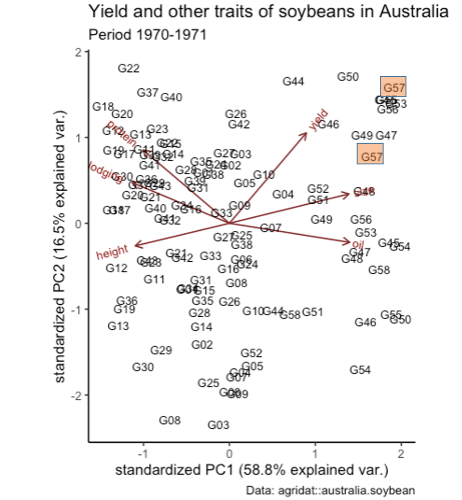

International Institute of Tropical Agriculture (IITA)
Introduction
Data analysis is a vital part of every research work. To achieve this, there are three types of analysis that can be appliedto datasets, these includes:
Univariate analysis: This involves only one variable (methods includes mode, mean, median, etc.).
Bivariate analysis: This involves two variables (method includes linear regression, correlation etc. )
Multivariate analysis: This involves two or more variables ( Cluster analysis, Principal Components or Factor analysis, neural network Bayesian classifier, matrix plot etc.). In multivariate analysis we are concerned with sets of objects on each of which p variables (or variates) are measured, but usually with no prior differentiation of variables into causes and effects. We can look at any one variable in isolation but to get the whole picture the variables must be considered jointly.
Multivariate analysis(MVA) refers to a broad set of statistical methods designed for examining relationships among multiple variables concurrently, typically beyond two. Its purpose is to uncover intricate patterns and correlations within a dataset, offering a richer and more refined comprehension of the underlying scenario compared to simpler analyses. Through simultaneous examination of multiple variables, MVA yields deeper insights and more precise predictions, thereby bolstering decision-making within data-driven industries.
In fields like plant breeding, where understanding complex interconnections among data is crucial, this technique plays a foundation role. Variables such as days to flowering, days to maturity, 100_seed_weights and plant heights collectively influence the yield of crops. This necessitates the need for multivariate analysis.
There are several methods of multivariate analysis, but in this study, we will be considering three major methods:
Clustering
K-means clustering, and
Principal Component Analysis (PCA).
Clustering
A cluster analysis groups observations or variables based on similarities between them. When organizing data into clusters, the objective is for variables within the same cluster to exhibit greater similarity to each other compared to variables in different clusters. This comparison is quantified through intracluster and intercluster distances. Intracluster distance assesses the proximity of data points within a single cluster, ideally aiming for a minimal value. Intercluster distance, on the other hand, measures the separation between data points belonging to distinct clusters, with the goal of maximizing this distance for effective clustering. Data clustering techniques are valuable tools for researchers working with large databases of multivariate data.
Clustering analysis aims to uncover patterns within data and organize them into distinct groups based on those patterns. Hence, if two data points share similar traits, it indicates they follow the same pattern and thus should be grouped together. Through clustering analysis, we can explore which features tend to co-occur and understand the defining characteristics of each group.
We classify or cluster:
For data description - to understand the data better than producing a distribution.
For data reduction – i.e. reduce the size of data for, say, geographical reasons, etc.
For typology/taxonomy - to look for some natural grouping.
The major type of clustering includes:
Partitioning/Centroid based clustering
Hierarchical clustering
Grid-Based clustering
Density-Based clustering
Model-Based clustering
1. Partitioning/Centroid based clustering
Centroid-based clustering is a clustering approach that divides a dataset into comparable groups by assessing the distances between their centroids. Example, k-means clustering.
2. Hierarchical(Agglomerative) clustering
This method identifies clusters by evaluating the proximity of data points to each other, operating on the premise that objects in closer proximity are more closely associated than those situated farther apart. To apply connectivity-based clustering, you must first select the relevant data points and quantify their similarities or differences using a distance metric. Next, a connectivity measure, like a graph or network, is created to depict the connections among the data points. Subsequently, the clustering algorithm utilizes this connectivity data to organize the data points into clusters that capture their inherent similarities. This process is often represented visually through a dendrogram, resembling a hierarchical tree structure.
The Agglomerative clustering is the most common type of hierarchical clustering used to group objects in clusters based on their similarity. It’s also known as AGNES (Agglomerative Nesting). The algorithm starts by treating each object as a singleton cluster. Next, pairs of clusters are successively merged until all clusters have been merged into one big cluster containing all objects. The result is a tree-based representation of the objects, named dendrogram.
A dendrogram shows the hierarchical relationship between the clusters
There are many distance metrics and the choice depends on the type of data:
If the data are continuous quantitative, we can use the Euclidean distance or that of Manhattan,
If the data is binary (categorical), we can use the Jaccard distance
Other distance measurements include Minkowski, Canberra, etc.
Where there is no theoretical justification for an alternative, the Euclidean distance should generally be preferred. After the distance metric, we then have to choose a linkage criteria. There are many options: single-linkage, complete-linkage, mean or average-linkage, Ward’s method, etc. Each of the methods will produce a different dendrogram. In practice, we will most often prefer the Ward method. Ward’s method seeks to minimize intra-class variability and to maximize inter-class variability to obtain the most homogeneous possible clusters
Important things to note when working with Hierarchical clustering:
Standardize the data: The variables to be used for clustering are of different units. Standardizing the data (mean zero, unit variance) will ensure that the data is at the same scale. We subtract each data from its mean and divide it by the standard deviation. We can use the scale () function in R
Dealing with missing values: Several ways to deal with these values,
delete them
impute them with a mean, median, mode or use advanced regression techniques.
The root of the dendrogram corresponds to the cluster with all the individuals together. This dendrogram represents a hierarchy of partitions. The “fusion” distance (height) is indicated on the y-axis of the dendrogram
3. Grid-Based clustering
Grid-based clustering divides a high-dimensional dataset into cells, which are distinct sets of non-overlapping sub-regions. Every cell is given a unique identifier known as a cell ID, and all data points contained within a cell are regarded as belonging to the same cluster. This clustering technique proves efficient for analyzing expansive multidimensional datasets, as it diminishes the search time required for locating nearest neighbors, a frequent procedure in numerous clustering methodologies.
4. Density-Based clustering
Density-based clustering represents a robust unsupervised machine learning method that enables the identification of dense clusters within a dataset. In contrast to clustering algorithms like K-means and hierarchical clustering, density-based clustering can unveil clusters of varied shapes, sizes, and densities. This technique proves particularly advantageous when handling datasets containing noise or outliers, or when the precise number of clusters within the data is unknown.
5. Model-Based clustering
Model-based clustering organizes data points into groups according to their probability distribution, leveraging statistical patterns to delineate clusters within the dataset. Unlike centroid-based clustering, it employs statistical patterns for cluster identification. However, model-based clustering is susceptible to overfitting, wherein clustering excessively relies on the dataset, leading to inaccurate predictions.
Example
Let’s Consider the steptoe.morex.pheno.csv data from the agridat package, multi-environment trial of barley. The dataset contains 2432 observations on the following 10 variables:
gen (genotype) - a Character vector for the genes of the barley
env (environment)- a character vector of the environment
amylase (alpha amylase), 20 Deg Units - a numeric vector for the alpha amylase sample
diapow (diastatic power), degree units - a numeric vector for the diastatic power
hddate (heading date),julian days - a numeric vector for the heading date
lodging, percent- a numeric vector for the lodging
malt (malt extract), percent - numeric vector for the malt sample
height (plant height), centimeters - numeric vector for the height sample
protein (grain protein), percent - numeric vector for the protein sample
yield (grain yield), mt / ha - numeric vector for the plant yield
── Attaching core tidyverse packages ──────────────────────── tidyverse 2.0.0 ──
✔ dplyr 1.1.4 ✔ readr 2.1.5
✔ forcats 1.0.0 ✔ stringr 1.5.1
✔ ggplot2 3.5.1 ✔ tibble 3.2.1
✔ lubridate 1.9.3 ✔ tidyr 1.3.1
✔ purrr 1.0.2
── Conflicts ────────────────────────────────────────── tidyverse_conflicts() ──
✖ dplyr::filter() masks stats::filter()
✖ dplyr::lag() masks stats::lag()
ℹ Use the conflicted package (<http://conflicted.r-lib.org/>) to force all conflicts to become errors
dat <-read_csv("steptoe.morex.pheno.csv")
Rows: 2432 Columns: 10
── Column specification ────────────────────────────────────────────────────────
Delimiter: ","
chr (2): gen, env
dbl (8): amylase, diapow, hddate, lodging, malt, height, protein, yield
ℹ Use `spec()` to retrieve the full column specification for this data.
ℹ Specify the column types or set `show_col_types = FALSE` to quiet this message.
dat
# A tibble: 2,432 × 10
gen env amylase diapow hddate lodging malt height protein yield
<chr> <chr> <dbl> <dbl> <dbl> <dbl> <dbl> <dbl> <dbl> <dbl>
1 Steptoe MN92 22.7 46 150. NA 73.6 84.5 10.5 5.53
2 Steptoe MTi92 30.1 72 178 10 76.5 NA 11.2 8.64
3 Steptoe MTd92 26.7 78 165 15 74.5 75.5 13.4 5.90
4 Steptoe ID91 26.2 74 179 NA 74.1 111 12.1 8.63
5 Steptoe OR91 19.6 62 191 NA 71.5 90 11.7 5.34
6 Steptoe WA91 23.6 54 181 NA 73.8 112 10 6.27
7 Steptoe MTi91 21 62 181 NA 70.8 98 12 4.10
8 Steptoe MTd91 NA NA 181 NA NA 82 NA 7.07
9 Steptoe NY92 NA NA 176 0 NA 77.5 NA 6.05
10 Steptoe ON92 NA NA 198 50 NA 95 NA 3.70
# ℹ 2,422 more rows
str(dat)
spc_tbl_ [2,432 × 10] (S3: spec_tbl_df/tbl_df/tbl/data.frame)
$ gen : chr [1:2432] "Steptoe" "Steptoe" "Steptoe" "Steptoe" ...
$ env : chr [1:2432] "MN92" "MTi92" "MTd92" "ID91" ...
$ amylase: num [1:2432] 22.7 30.1 26.7 26.2 19.6 23.6 21 NA NA NA ...
$ diapow : num [1:2432] 46 72 78 74 62 54 62 NA NA NA ...
$ hddate : num [1:2432] 150 178 165 179 191 ...
$ lodging: num [1:2432] NA 10 15 NA NA NA NA NA 0 50 ...
$ malt : num [1:2432] 73.6 76.5 74.5 74.1 71.5 73.8 70.8 NA NA NA ...
$ height : num [1:2432] 84.5 NA 75.5 111 90 112 98 82 77.5 95 ...
$ protein: num [1:2432] 10.5 11.2 13.4 12.1 11.7 10 12 NA NA NA ...
$ yield : num [1:2432] 5.53 8.64 5.9 8.63 5.34 ...
- attr(*, "spec")=
.. cols(
.. gen = col_character(),
.. env = col_character(),
.. amylase = col_double(),
.. diapow = col_double(),
.. hddate = col_double(),
.. lodging = col_double(),
.. malt = col_double(),
.. height = col_double(),
.. protein = col_double(),
.. yield = col_double()
.. )
- attr(*, "problems")=<externalptr>
This shows us the structure and different data types in our dataset
Let’s look at the summary of the data
#|eval=TRUE#|tidy=FALSE#|size='tiny'summary(dat)
gen env amylase diapow
Length:2432 Length:2432 Min. :14.90 Min. : 35.00
Class :character Class :character 1st Qu.:25.62 1st Qu.: 70.00
Mode :character Mode :character Median :28.50 Median : 84.00
Mean :29.04 Mean : 87.25
3rd Qu.:32.00 3rd Qu.:101.00
Max. :49.30 Max. :229.00
NA's :1066 NA's :1066
hddate lodging malt height
Min. :143.0 Min. : 0.00 Min. :69.00 Min. : 34.00
1st Qu.:174.5 1st Qu.: 15.00 1st Qu.:73.30 1st Qu.: 82.50
Median :183.5 Median : 35.00 Median :74.50 Median : 95.00
Mean :181.2 Mean : 37.13 Mean :74.72 Mean : 94.95
3rd Qu.:191.0 3rd Qu.: 55.00 3rd Qu.:75.90 3rd Qu.:109.00
Max. :217.0 Max. :100.00 Max. :83.00 Max. :151.00
NA's :1521 NA's :1067 NA's :5
protein yield
Min. : 8.00 Min. : 1.390
1st Qu.:11.90 1st Qu.: 4.092
Median :13.00 Median : 5.272
Mean :12.92 Mean : 5.293
3rd Qu.:14.00 3rd Qu.: 6.338
Max. :17.50 Max. :11.526
NA's :1067
gen env amylase diapow
Length:152 Length:152 Min. :19.10 Min. : 47.00
Class :character Class :character 1st Qu.:25.48 1st Qu.: 72.00
Mode :character Mode :character Median :28.05 Median : 83.00
Mean :28.08 Mean : 84.16
3rd Qu.:30.12 3rd Qu.: 94.00
Max. :40.10 Max. :144.00
hddate lodging malt height protein
Min. :173.0 Min. : NA Min. :71.10 Min. : 92.7 Min. :11.30
1st Qu.:178.0 1st Qu.: NA 1st Qu.:73.40 1st Qu.:108.9 1st Qu.:12.90
Median :180.5 Median : NA Median :74.40 Median :114.3 Median :13.50
Mean :180.5 Mean :NaN Mean :74.36 Mean :114.0 Mean :13.57
3rd Qu.:183.0 3rd Qu.: NA 3rd Qu.:75.20 3rd Qu.:119.4 3rd Qu.:14.22
Max. :188.0 Max. : NA Max. :78.50 Max. :137.2 Max. :16.00
NA's :152
yield
Min. : 4.048
1st Qu.: 6.681
Median : 7.684
Mean : 7.500
3rd Qu.: 8.382
Max. :10.315
lodging is missing for all genotypes in this environment. So we exclude lodging in the dataset
We can visualize the dendrogram using the plot() function
#|eval=TRUE#|tidy=FALSE#|size='large'plot(hclust.ID91, hang =-1,rect=TRUE, cex =0.5)
Warning in graphics:::plotHclust(n1, merge, height, order(x$order), hang, :
"rect" is not a graphical parameter
Warning in graphics:::plotHclust(n1, merge, height, order(x$order), hang, :
"rect" is not a graphical parameter
Warning in axis(2, at = pretty(range(height)), ...): "rect" is not a graphical
parameter
Warning in title(main = main, sub = sub, xlab = xlab, ylab = ylab, ...): "rect"
is not a graphical parameter
We can visualize the three clusters with different colors by using the color_branches () function of the dendextend package
---------------------
Welcome to dendextend version 1.17.1
Type citation('dendextend') for how to cite the package.
Type browseVignettes(package = 'dendextend') for the package vignette.
The github page is: https://github.com/talgalili/dendextend/
Suggestions and bug-reports can be submitted at: https://github.com/talgalili/dendextend/issues
You may ask questions at stackoverflow, use the r and dendextend tags:
https://stackoverflow.com/questions/tagged/dendextend
To suppress this message use: suppressPackageStartupMessages(library(dendextend))
---------------------
Attaching package: 'dendextend'
The following object is masked from 'package:stats':
cutree
dend.ID91 <-as.dendrogram(hclust.ID91) col.dend.ID91 <-color_branches(dend.ID91, k =3)
#|eval=TRUE#|tidy=FALSE#|size='tiny'plot(col.dend.ID91, hang =1, cex =0.4)
Warning in plot.window(...): "hang" is not a graphical parameter
Warning in plot.xy(xy, type, ...): "hang" is not a graphical parameter
Warning in axis(side = side, at = at, labels = labels, ...): "hang" is not a
graphical parameter
Warning in axis(side = side, at = at, labels = labels, ...): "hang" is not a
graphical parameter
Warning in title(...): "hang" is not a graphical parameter
We can get the groups to which the genotypes belong by specifying the number of clusters
#|eval=TRUE#|tidy=FALSE#|size='tiny'cut.ID91 <-cutree(hclust.ID91, k =3)
We add the group names of the genotypes to the original data
The table above shows the summary of mean of each variable based on the cluster. This example illustrates how clustering into groups can be done in R.
K-Means Clustering
Data clustering techniques serve as descriptive tools for analyzing multivariate datasets and revealing underlying structures within the data. They prove particularly beneficial when traditional second-order statistical methods, such as sample mean and covariance, are not applicable. In exploratory data analysis, where prior knowledge about the dataset’s distribution is lacking, clustering becomes invaluable. It operates as a form of unsupervised classification, forming clusters by assessing similarities and dissimilarities among intrinsic characteristics of different cases. Groupings are based solely on these emergent similarities, independent of any external criteria.
K-Means clustering offers a solution for analyzing unlabeled data, where clear categories or groups are absent. This algorithm provides a straightforward approach to organizing a dataset into a specified number of clusters. It is a simple approach for partitioning a dataset into K distinct, non-overlapping clusters. Through iterative steps, it assigns each data point to one of K groups, relying on feature similarities to cluster the data effectively. The K-Means technique stands out as the most straightforward and widely used clustering approach. It possesses the capability to efficiently group extensive datasets, accomplishing this task with rapid and effective computational speed.
K-means clustering follows similar intuition to hierarchical clustering algorithms used for partitioning the multivariate data set. However, the number of k groups is pre-defined before analysis, hence the name k-means. It allows us to classify observations in a data set in multiple groups called clusters such that observations in the same cluster are as similar as possible (i.e. high intra-class similarity) and observations from other clusters are as dissimilar as possible (i.e. low inter-class similarity). Each cluster is represented by its center (i.e, centroid) corresponding to the mean of the points assigned to the cluster.
K-Means Clustering Steps
Conceptually, K-means operates in the following manner:
It randomly selects K centroids.
Each data point (e.g., each yield) is assigned to the closest centroid in an n-dimensional space, where n represents the number of features used in clustering (e.g., features such as water, protein, oil, and height). This allocation results in each point belonging to a specific group.
The centroids are recalculated as the mean point (vector) of all other points within the group.
Steps 2 and 3 are iteratively repeated until either the groups stabilize, meaning no points are reassigned to another centroid, or the maximum number of iterations is reached (commonly set to 10 in default settings).
As you increase the chosen value of K in clustering, the variance within the groups decreases. When K equals the number of observations, each point becomes its own group, resulting in a variance of 0.
The function kmeans() in the base R stats package can be used to perform K-means clustering. It is often recommended to use the set.seed() function to set a seed for R’s random number to make the results reproducible.
The basic argument of the function is as follows:
kmeans(df, k, nstart = x)
df is the numeric data frame
k is the number of clusters
nstart =x is the number of random starting partitions, where x>1 is recommended to have a stable result However, a beautiful cluster visualization can be created from the clusters generated with kmeans() function with fviz_cluster() function in the factoextra package which can be installed using install.packages("factoextra").
The basic argument needed in the function are:
fviz_cluster(km, df)
km is the kmeans object results
df is the original data sets
Example
To demonstrate how these functions work, let’s consider steptoe.morex.pheno.csv dataset, a multi-environment trial of barley using one environment ,ID91.
#|eval=TRUE#|tidy=FALSE#|size='tiny'library(tidyverse) dat <-read_csv("steptoe.morex.pheno.csv")
Rows: 2432 Columns: 10
── Column specification ────────────────────────────────────────────────────────
Delimiter: ","
chr (2): gen, env
dbl (8): amylase, diapow, hddate, lodging, malt, height, protein, yield
ℹ Use `spec()` to retrieve the full column specification for this data.
ℹ Specify the column types or set `show_col_types = FALSE` to quiet this message.
dat
# A tibble: 2,432 × 10
gen env amylase diapow hddate lodging malt height protein yield
<chr> <chr> <dbl> <dbl> <dbl> <dbl> <dbl> <dbl> <dbl> <dbl>
1 Steptoe MN92 22.7 46 150. NA 73.6 84.5 10.5 5.53
2 Steptoe MTi92 30.1 72 178 10 76.5 NA 11.2 8.64
3 Steptoe MTd92 26.7 78 165 15 74.5 75.5 13.4 5.90
4 Steptoe ID91 26.2 74 179 NA 74.1 111 12.1 8.63
5 Steptoe OR91 19.6 62 191 NA 71.5 90 11.7 5.34
6 Steptoe WA91 23.6 54 181 NA 73.8 112 10 6.27
7 Steptoe MTi91 21 62 181 NA 70.8 98 12 4.10
8 Steptoe MTd91 NA NA 181 NA NA 82 NA 7.07
9 Steptoe NY92 NA NA 176 0 NA 77.5 NA 6.05
10 Steptoe ON92 NA NA 198 50 NA 95 NA 3.70
# ℹ 2,422 more rows
Filter the data set to include only the quantitative variables and the genotype name.
#|eval=TRUE#|tidy=FALSE#|size='tiny'dat.ID91 <- dat %>%filter(env=="ID91") %>%select(-c(env, lodging)) %>%column_to_rownames(var ="gen")head(dat.ID91, 4)
With an increase in groups (k = 4), the value of well grouped data increases to 48.4%, which is a better value than the previous. This indicates that the bigger the value of K, the better the grouping gets.
The objective of clustering analysis is to uncover patterns within the dataset. As illustrated in the plot, observations within a group typically share similar characteristics.
Principal Component Analysis (PCA)
Principal Component Analysis (PCA), is a statistical technique aimed at revealing the covariance structure within a set of variables. It facilitates the identification of the primary directions along which the data exhibits variation.
Principal component analysis (PCA) is a useful technique for exploratory data analysis, allowing to better visualize the variation present in a data set with many variables. It is particularly useful in the case of large data sets, where there are many variables; difficult to represent all the data in their raw format, which makes it difficult to understand the trends present inside. PCA allows us to see the general shape of a data, identifying which observations are similar. This can allow us to identify groups of similar observations and determine which variables make one group different from another
The basics of PCA:
take a dataset with many variables
reduce the number of variables to a smaller number of principal components
visualize the correlations between the variables
visualize the similarities between observations (individuals)
The principal components are the directions where there is the most variance, the directions where the data is the most distributed. This means that we are trying to find the straight line that best distributes the data as it is projected along it. The first main component is the straight line which shows the largest variation in the data
PCA is a type of linear transformation that adapts a dataset to a new coordinate system such that the most significant variance is on the first coordinate, and each subsequent coordinate is orthogonal to the last and has a variance lesser. In this way, we transform a set of x correlated variables on y observations into a set of p uncorrelated principal components on the same observations. When many variables are correlated, they will all contribute strongly to the same principal component. Each principal component summarizes a certain percentage of the total variation in the data set. When the initial variables are highly correlated with each other, you will be able to approach most of the complexity of your dataset with just a few main components.
Principal Component Analysis (PCA) is a widely used statistical technique for dimensionality reduction and data visualization. It aims to simplify complex datasets by transforming them into a new coordinate system, where the variables are uncorrelated, and the first few dimensions (principal components) capture the maximum variance in the data.
Here’s how PCA typically works
Standardization: If the variables in the dataset are measured on different scales, PCA often starts with standardizing the data to have a mean of 0 and a standard deviation of 1.
Covariance Matrix: PCA calculates the covariance matrix of the standardized data. This matrix summarizes the relationships between pairs of variables, indicating how much they vary together.
Eigenvalue Decomposition: PCA then decomposes the covariance matrix into its eigenvectors and eigenvalues. The eigenvectors represent the directions of maximum variance in the data, and the corresponding eigenvalues indicate the magnitude of variance along those directions.
Selecting Principal Components: The eigenvectors are ranked based on their corresponding eigenvalues, with the first eigenvector capturing the most variance, the second capturing the second most variance, and so on. Typically, only a subset of the top-ranked eigenvectors, called principal components, are retained, thereby reducing the dimensionality of the dataset.
Dimensionality Reduction: By projecting the original data onto the selected principal components, PCA creates a lower-dimensional representation of the dataset while preserving as much of the variance as possible. This reduced representation can often capture the essential patterns and structures in the data.
Application of PCA
Dimensionality Reduction: PCA can reduce the number of variables in a dataset while retaining most of the variance, making it easier to analyze and visualize high-dimensional data.
Data Visualization: PCA can be used to visualize high-dimensional data in lower dimensions (e.g., 2D or 3D), allowing for easier interpretation and exploration of data patterns.
Feature Extraction: PCA can extract new features (principal components) that are linear combinations of the original variables. These new features may capture important underlying patterns in the data.
Overall, PCA is a versatile tool widely used in various fields such as statistics, machine learning, finance, image processing, and genetics for data preprocessing, visualization, and feature extraction.
Example
Let’s consider the australia.soybean.csv, a multi-environment trial of 58 varieties of soybeans, in 4 locations across 2 years in Australia. The description of the data are:
env (environment), 8 levels,
loc (location)
year
gen (genotype) of soybeans,
yield, metric tons/hectare
height, in meters
lodging, number of plants
size seed, in millimetres
protein, percentage
oil, percentage
#|eval=TRUE#|tidy=FALSE#|size='tiny'library(tidyverse) dat <-read_csv("australia.soybean.csv")
Rows: 464 Columns: 10
── Column specification ────────────────────────────────────────────────────────
Delimiter: ","
chr (3): env, loc, gen
dbl (7): year, yield, height, lodging, size, protein, oil
ℹ Use `spec()` to retrieve the full column specification for this data.
ℹ Specify the column types or set `show_col_types = FALSE` to quiet this message.
To study the relationship between two variables, say yield and oil, we can use + Pearson correlation coefficient + Simple linear regression
The first 2 axes explain more than 75% of the variation in the dataset. We visualize the PCA using a biplot. A biplot is a type of graph that allows us to simultaneously visualize the observations and the variables. We use the ggbiplot package to visualize the biplot.
#|eval=FALSE#|tidy=FALSE#|size='tiny'library(ggbiplot) ggbiplot(dat.Brookstead.pca) +labs(title ="Yield and other traits of soybeans in Australia", subtitle ="Period 1970-1971", caption ="Data: agridat::australia.soybean" ) +theme_classic()
The components are seen as arrows coming from the origin. Here, all the variables contribute to PC1, with:
higher values of oil, size and yield to the right on this graph and lower values to the left
vice versa for protein, lodging and height
This allows us to see how the observations relate to the components. However, this is not very informative if we do not identify the observations. We can display the names of the genotypes.
#|eval=FALSE#|tidy=FALSE#|size='tiny'library(ggbiplot) ggbiplot(dat.Brookstead.pca, labels=labels.gen) +#<<labs(title ="Yield and other traits of soybeans in Australia", subtitle ="Period 1970-1971", caption ="Data: agridat::australia.soybean" ) +theme_classic()

The diagram shows in detail the observations per each genotype.
We have two years of testing, 1970 and 1971. Could be interesting to identify the genotypes by year
#|eval=FALSE#|tidy=FALSE#|size='tiny'library(ggbiplot) #ggbiplot(dat.Brookstead.pca, labels=labels.gen, groups=labels.year)+ #<< #labs(title = "Yield and other traits of soybeans in Australia", subtitle = "Period 1970-1971", caption = "Data: agridat::australia.soybean" ) +#theme_classic()


 The diagram above indicates a positive linear relationship between yield and oil content of soybeans.
The diagram above indicates a positive linear relationship between yield and oil content of soybeans.